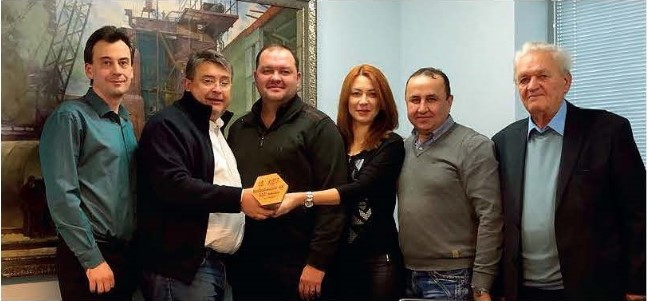
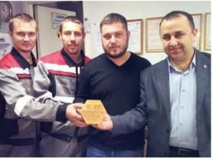

ИТГАЗ
СОБЫТИЯ

Лаборатория неразрушающего контроля ООО «Итгаз» - 10 лет!

текст: Ринат Маматказин
26 ноября 2007 года был издан приказ за номером 186-п «О создании Лаборатории неразрушающего контроля»
Прошло 10 лет. На сегодняшний день в лаборатории НК ООО «Итгаз» работает
четыре специалиста по контролю: Ерков С.Ю., Фролов Д.Н., Казаков П.А., Маматказин Р.А. За прошедшие 10 лет производился контроль сварных соединений практически всех размеров - от Ду15 до Ду 1200. Лаборатория оснащена всем необходимым оборудованием и инструментами для проведения работ по визуальному и измерительному, радиографическому, ультразвуковому, и магнитному видам контроля. Основной задачей лаборатории является контроль качества сварных соединений систем газораспределения и газопотребления.
Хотелось бы выразить благодарность руководству предприятия за понимание, терпение и желание выпускать качественную продукцию. Наш девиз - «Качество во всех измерениях».
С уважением, коллектив Лаборатории НК